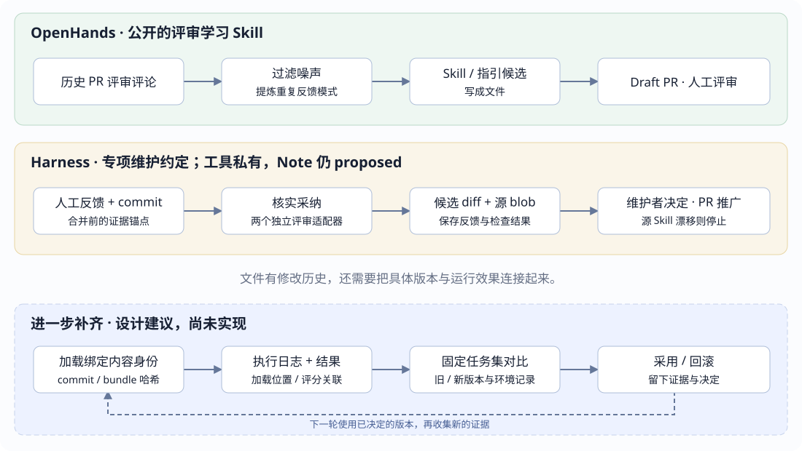

同一会话恢复
读取并校验已有前缀，后续追加接着其长度编号。构造种子不会自动再次发出 session/event；恢复还可能追加种子边界与中断修复事件。
← 课程首页 · Event Log 投影与类型 · 两家 ACP 对照
EVENT STRUCTURE · SEQUENCE · SKILL EVOLUTION
seq 说明一件事在会话中何时发生；Skill 版本说明当时读的是哪份知识。把执行结果与版本关联起来，才能进一步比较一次修改有没有帮助。
session/event(sessionId, seq) 定位日志事件；Git commit、内容哈希或发布版本标识 Skill。一个 Skill 可以加载很多次，每次加载有自己的事件位置。版本不能由 seq 推断。核对日期：2026-10-16。事件结构按本仓库 Harness 子模块 99f6f02；Skill 另核对上游 86a4022；OpenHands SDK 12e9676、extensions 7cec6d3。文末提供完整提交与证据。所有交互数据均为教学示例。
Session
├─ header：id、存储格式 version、cwd、parentSession、seedLength 等
└─ events[]：SessionEvent 数组
└─ events[5]
├─ type: "assistant/chunk" ← 发生什么
├─ seq: 5 ← 会话内位置
├─ time: 1792108800005 ← 记录时间
└─ data ← 此类事件的具体数据
├─ turn: 1
├─ step: 1
└─ chunk
├─ type: "text-delta" ← 如何更新内容块
├─ index: 0
└─ text: "检查"SessionEvent 最外层固定有 type / seq / time / data；可选 ignorable 表示未知事件是否可安全跳过。消息类事件还可携带顶层 surfaceOp 和 sourceEventSeqs。并非每类事件都有 turn、step 或 message：它们由 data 对应的事件类型决定。
原始事件不重复携带 sessionId。进程内观察者收到 (session, event)；UI 的 session/event 帧把它们组合为 { type, sessionId, event, view? }。因此网络中读事件序号的路径是 frame.event.seq。
| 看起来像“版本 / 编号”的字段 | 真实用途 | 不能据此推断 |
|---|---|---|
| SessionHeader.version | 会话存储格式兼容性。 | Skill、工具或模型的版本。 |
| SessionEvent.seq | 会话内事件的连续位置。 | 知识版本、磁盘写入确认、客户端收讫。 |
| data.turn / data.step | 在业务上归属哪个轮次 / 步骤。 | 全会话事件的位置；同一步可有多个事件和重试尝试。 |
| chunk.index | 关联流式内容块；同一块的多个分片可用同一个 index。 | 分片在整个日志里的顺序。 |
| projection.stateVersion / checkpoint.ver | 投影缓存的结构与折叠语义版本。 | Skill 内容版本。 |
Session.append() 校验并复制数据，在接受边界以当前 log.length 分配 seq，再把事件放进数组并通知观察者。第一个事件是 0；每成功接受一个事件加一；不会按 type、Turn 或 Step 重新编号。时间戳可能受系统时钟影响，排序用 seq。
// 源码中的赋值规则：事件位置来自当前日志长度。
seq: this.log.length
// 只读定位示例；完整 Session 日志保持索引与 seq 一致。
session.events[5].seq === 5
// 注意：session.seq 是下一条将分配的序号，也就是日志长度。
// 已有事件为 0…12 时，session.seq 为 13，最后事件的 seq 为 12。教学成功路径；不表示所有运行都只有这些事件。真实日志可能插入 request/context、插件事件、重试或中断标记。流式 delta 也不保证每条正好是一个 token。
读取并校验已有前缀，后续追加接着其长度编号。构造种子不会自动再次发出 session/event；恢复还可能追加种子边界与中断修复事件。
会话各自计数。Fork 可以继承前缀，同一个 seq 在两个 Session 中都存在；结合 sessionId，以及 parentSession / seedLength 理解来源。
下面沿用刚才的同一段教学序列。完整消息引用来源事件；打包行只是存储编码；投影水位只是读模型进度。切换不会执行工具或发送数据。
{
"type": "assistant/chunk",
"seq": 5,
"time": 1792108800005,
"data": {
"turn": 1,
"step": 1,
"chunk": { "type": "text-delta", "index": 0, "text": "检查" }
}
}读取路径：event.seq = 5
seq 是 SessionEvent 的公共外层字段。data 内的 turn、step、chunk.index 各有用途，里面不会再自动分配一份日志 seq。
只有成功接受的追加才进入日志。多层 type 并不意味着每层都要有自己的 seq。
| 出口 / 进度 | 字段位置或规则 | 边界 |
|---|---|---|
| 原始事件 → UI | frame.event.seq；原事件序号保持。 | 控制帧如 question/requested、session/queue 未必有事件 seq。 |
| 领域投影推送 | frame.seq，表示该 key 发出值时的事件水位；asOfSeq 是一致快照水位。 | 只有值变化时才需推送；不逐事件加一。不能当网络包计数器。 |
| 普通 JSONL 事件行 | 事件顶层 seq；首条 session header 没有事件 seq。 | 数组位置、文件物理行号和日志事件序号是不同概念。 |
| 连续 delta 打包行 | k 从 0 开始：seq0 + k 还原成员序号；time0 加 dt 的前 k 项之和还原时间。 | 一行可代表多个事件；不另造打包事件，也不重排原事件。 |
| 完整消息来源 | 顶层 sourceEventSeqs 引用此前事件；消息自己仍有新的 seq。 | 这是已知来源关联，不表示恢复旧分片的网络流，也不自动关联 Skill 版本。 |
| 遥测 → OTel Logs | attributes["event.seq"] 与 attributes["session.id"]；body 是事件 data 的副本。 | 当前捕获只保留每个 (turn, step) 的首条 assistant/chunk。序号有缺口不自动意味着丢失。 |
| 持久化 / 发送 | append、持久化消费者排空、交给传输、客户端收到分别发生。 | 最新 seq 不是 flush 或 fsync 凭据；发送游标也不是客户端耐久接收确认。 |
“跳号”要先看消费的是哪条流。完整的 canonical Session 日志要求连续；筛选后的遥测、只变化时推送的投影、消息来源引用和分页片段都可能不连续。不能用同一条缺口规则判断。
这里的 seq 规则属于 DeepSeek Harness。OpenHands 的事件身份与会话存储使用自己的结构，不能把 Harness 的字段名或数组索引约定直接套过去。两家的 Skill 比较也不依赖拥有相同的事件格式。
例如“代码评审”Skill：先出现在目录中，模型才知道可选；加载正文后，模型才读到具体要求；后续是否按要求检查了权限边界，还要看动作和结果。仅有加载记录无法证明遵循。
| Harness 路径 | 日志留下什么 | 没有自动保证什么 |
|---|---|---|
| 目录发布 / 更新 | user/message，source.kind 为 skill-catalog；记录名称、截断后的描述。 | 没有正文版本；目录 digest 基于名称与发布描述，不是正文或整个资源包哈希。 |
| 模型调用 skill 工具 | tool/call 记录名称参数；tool/result 保存渲染后的指令正文与资源基底提示。 | 没有统一传递 version、commit、metadata 或内容哈希。 |
| 用户显式 /name | user/message，source.kind 为 skill-invocation；记录 name、form 和注入正文。 | 不是必须先出现一次 skill 工具调用；同样不自动附带版本身份。 |
| 宿主直接 ctx.skills.get() | 只是注册表读取；是否入会话由消费方决定。 | 不是每次 provider 扫描或宿主读取都会自动写 SessionEvent。 |
| 后续工具执行 | 普通工具调用和结果各自留痕。 | 没有统一的 causedBySkillVersion，不能仅凭先后顺序证明因果。 |
有正文快照，能追溯一部分知识；有版本身份，才方便跨运行归组。文件路径可变，发布版本可能忘记更新。需要精确身份时，可用正文 / bundle 内容哈希，以及不可变的来源 commit；但这些都要在加载边界实际采集。
| 比较项 | OpenHands SDK / extensions | DeepSeek Harness |
|---|---|---|
| Skill 身份 | 已有字段 Skill 对象含 version，默认 1.0.0；允许自定义 metadata。声明值不是内容哈希。 | 已有加载 SkillDefinition 有 name、provider、content、metadata 等；没有统一的一等 version 字段。 |
| 安装版本 | Git ref 可固定 安装记录保存 source、requested_ref、resolved_ref、version；Git 来源可记录实际 commit。 | 由来源 / 部署管理 这里核对的文件系统 provider 没有统一安装锁文件或解析 commit 的版本协议；项目文件可由 Git 管理。 |
| 每次加载的记录 | InvokeSkillAction / Observation；结果包含 skill_name、正文；state.invoked_skills 去重记录名称。没有在此 observation 上自动带安装 commit。 | 模型工具结果或用户指令注入，保留渲染正文；加载结果未自动传递 metadata 中的版本。 |
| 跨会话经验 | 可选持久记忆 用户 / 项目两级 MEMORY.md；默认关闭，Agent 根据提示维护文件。 | 通过 Skill 和仓库上下文文件沉淀；本页核对的 Skill 子系统没有与 OpenHands 两级 MEMORY.md 对等的专用开关。 |
| 从反馈改 Skill | 公开指令流程 learn-from-code-review 抽取历史评审模式，生成 Skill / 指引并提出 draft PR。 | 专用维护方案 dsh-code-review 文档描述采纳证据、双评审、候选修改与推广；工具属于维护者私有设施，Note 仍 proposed。 |
| 效果择优升级 | 这些已核对路径没有内置通用的“版本绑定执行 → 固定任务集 A/B → 达标自动采用 / 退化回滚”。不能把任务内 critic 修正、文件更新或通过 lint，当成已证明 Skill 新版本更好。 | |
这是所列固定快照和具体路径的比较；不推断闭源 Cloud、内部训练或所有第三方插件的能力。Git 历史可以支撑人工改进，日志可以帮助复盘；缺的是把这两条证据链稳定连起来。
learn-from-code-review 读取已合并 PR 的评论，过滤 bot 和低信号内容；建议从 3 条以上相似反馈提炼模式；生成 Skill 或 AGENTS.md 指引，提出草稿 PR 并要求人工评审。
入口是用户请求或另行配置的周期调用。仓库里有这份 Skill，不代表默认每轮会话都执行它。
AgentContext(load_memory=True) 在新会话加载用户级与项目级 MEMORY.md 索引；提示 Agent 记录经验、去重和清理过期条目。长细节可放每日日志，按需读取。
这是外部文本记忆；不是自动训练模型，也不是自动发布 Skill 新版本。默认关闭。
安装线：source + requested_ref → 解析 Git commit → .installed.json
运行线：invoke_skill(name) → 返回渲染正文 → Observation / invoked_skills
安装记录知道“装了哪份”，不自动意味着每次 Observation 都绑定该 commit。本快照的 Skill.version 默认 1.0.0。文件加载的 _create_skill_from_metadata 转发 description、license、compatibility、metadata 等字段，但未把顶层 version 或 metadata.version 显式映射到 Skill.version。因此，单纯在文件里填写版本，不应被当成安装记录已可靠体现该值；metadata 中的字符串与一等 version 字段也不是同一字段。程序直接构造 Skill 时可显式传 version。具体采用值要核对真实加载与安装结果。
另有 iterative refinement / critic 能在任务中根据反馈继续修改产物；它解决“这次任务做得怎样”，不自动完成“把哪版 Skill 推广给下一次任务”。
version 字段与文件解析 · 安装记录 · 调用 observation 与名称记录 · 评审学习 Skill · 持久记忆文档 · 任务内迭代示例
运行时已实现
skill-filesystem 每次加载重新读取文件；正文修改会影响下次加载，但不会改写历史工具结果。名称、描述和可见性改变时，目录消费者可发布替换目录；只改正文不必产生新的目录消息。修改文件也不表示当前上下文里已经加载的旧指令被自动替换。
公开约定 · 私有工具 · Note 仍 proposed
dsh-code-review 的维护手册描述由指定操作员运行的专项流程：先核实人类评审反馈是否被最终代码采纳，再提炼规则。这里的版本身份放在维护产物里，并非自动写入每次 SessionEvent。

以下为建议，尚未实现
最小补齐可以从“加载边界记录身份”开始，再逐步加入执行关联和对比评测。不是先造一个全新的事件平台。
| 建议补的事实 | 怎样定位 | 避免什么误判 |
|---|---|---|
| 加载身份 | skill 名称、provider、来源 commit、正文哈希；依赖脚本 / 参考文件还需 bundle 摘要或不可变资源清单。 | 同名或同版本号不代表内容相同；只给 SKILL.md 算哈希不能覆盖脚本改动。 |
| 加载与执行关联 | 在设计的加载记录中保存身份；用 sessionId + seq 定位加载，再让相关执行显式引用。 | 先加载 A、后调用工具，不足以证明该工具行为由 A 导致；多个 Skill 可能共同影响一次任务。 |
| 评价与候选修改 | 关联具体运行的成功标准、人工反馈、错误类型，以及这次修改依据的证据。 | 一次点赞、Agent 自评或一轮任务成功，不等于版本改进成立。 |
| 对比与采用 | 用固定任务集比较旧 / 新内容身份，记录模型、工具、环境和评分器；再决定采用或回滚。 | 模型升级、工具变化或任务难度不同，可能被误归因给 Skill。 |
例子：评审 Skill 新增“检查权限绕过”
旧 bundle 哈希 A → 同一批含漏洞 / 正常样例 → 漏报、误报、耗时
新 bundle 哈希 B → 同一批含漏洞 / 正常样例 → 漏报、误报、耗时
Event Log 解释：每次读了什么、做了什么、结果是什么。
版本清单解释：A / B 各是哪份内容和依赖。
评测记录解释：在明确条件下，B 是否比 A 更好。若接 Langfuse，可把加载身份和关联位置投影为观测元数据，再接评分 / 实验结果；当前 Harness OTel 后端发送 Logs，不能仅改 URL 就自动变成 Langfuse 的 Traces / Generations。需要另做事件到 observation 的映射。参见 Langfuse 官方 OTel 接入说明。
本次交付是静态文档和交互说明器；没有修改两家后端，没有运行真实模型的版本对比实验。以下路径可在实施时作为验收依据。
99f6f02fecdb7dff40c3fbc9470f5907c29f74ca，与当前课程子模块一致。86a402200d95fecef4529d969836f1fe13c6cb0d，另核对的上游快照；没有更新课程子模块。12e967664c2353f4cb85dd27da04ade035ff078c。7cec6d351ac54aee5af6c358bd2c0d4da840a5e4。官方在线文档会继续演进，结论以所列源码路径为准。